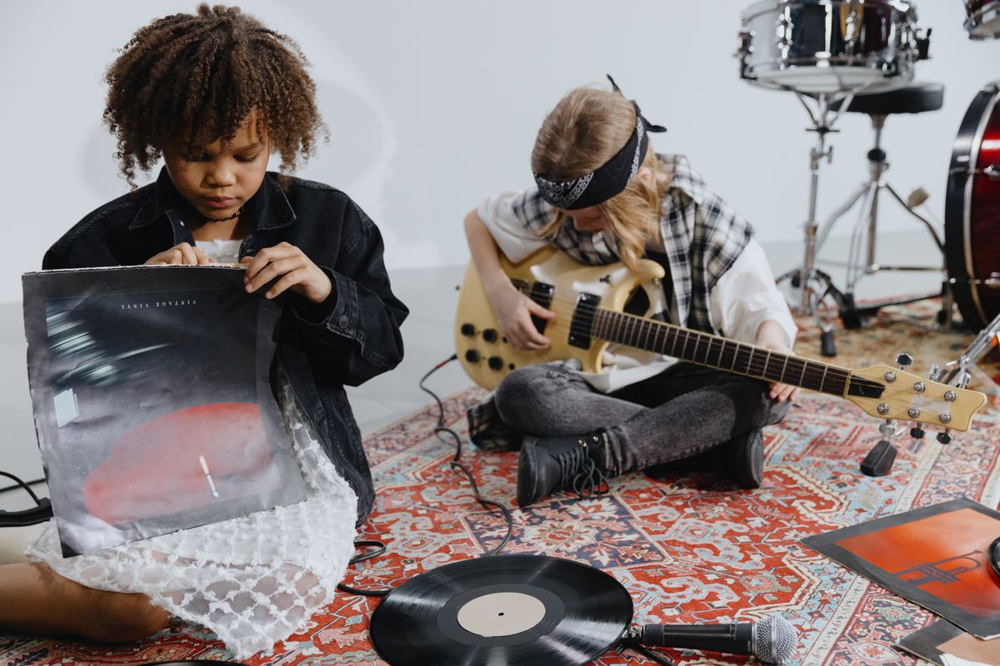

Free means free
Lessons, instruments, and showcases carry no hidden cost.
Toucan Music
We remove the price, equipment, and access barriers that keep children outside the music room.
Mission statement
We provide free neighborhood classes, lend instruments for the full season, and create welcoming stages where young musicians can be heard. Families never pay tuition, rental fees, or performance costs.
About us
Toucan Music is a community nonprofit for students who have historically had the least access to music education. Our rooms are small, our teaching is practical, and every student begins by making sound together.
Volunteers support classrooms, repair donated instruments, welcome families, and help performances run. Musical experience is useful, but consistency and care matter just as much.

Lessons, instruments, and showcases carry no hidden cost.
Students build confidence by playing with other young musicians.
Programs grow from local teachers, volunteers, families, and spaces.
Join a class, volunteer for an event, or ask how to support the instrument library.